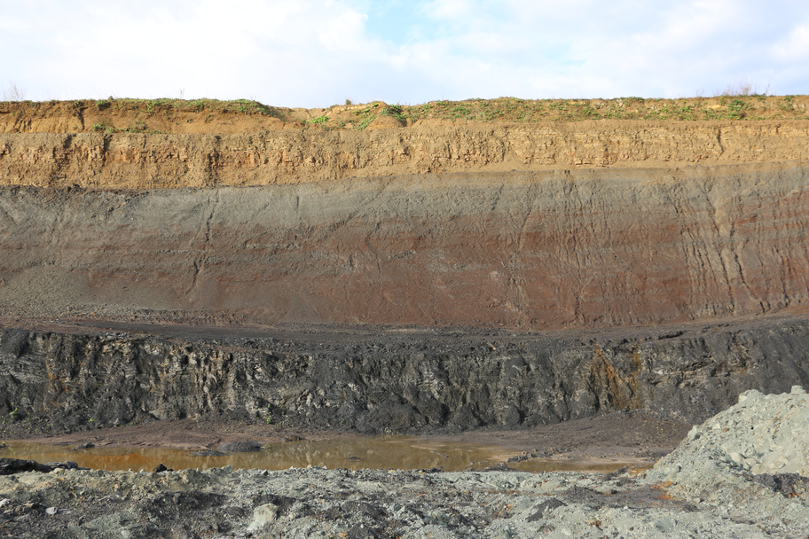
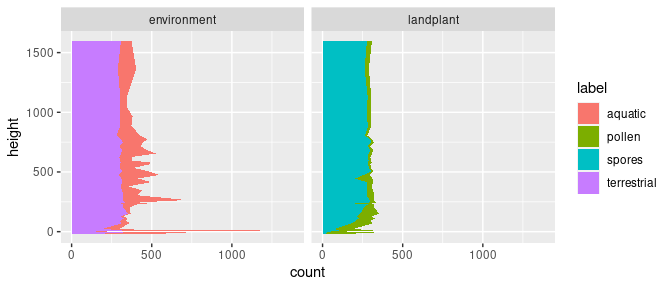

Exploratory data analysis
explore.Rmd
library(PAGES)Tidyverse packages
In the following exercise I will use the packages ggplot2 (Wickham et al. 2020; Wickham 2016) for plotting and dplyr (Wickham et al. 2021) for data manipulations. Both packages are from the tidyverse collection.
Data
I will use for this example the palynological dataset of my 2019 study on the Triassic-Jurassic transition (Schobben et al. 2019).

Position and orientation
In this example, I will show how the options position and orientation of th geom_area() function is important for stratigraphic studies with palynological count data.
The following is listed in the manual for these arguments.
- position—Position adjustment, either as a string, or the result of a call to a position adjustment function.
- orientation—The orientation of the layer. The default (
NA) automatically determines the orientation from the aesthetic mapping. In the rare event that this fails it can be given explicitly by settingorientationto either"x"or"y". See the Orientation section for more detail.
You will notice that the long format data (kuhjoch_long) is not the format of data table that you are normally used to. I will later on explain the transformation needed to obtain this type of data from the customary wide format data frame. The values of the variable count are absolute counts of the micro-floral element under the microscope. In the exercise I will transform this to relative counts, i.e., a “closed sum.”
First, I split the dataset into two types of analyses with facet_grid() and the categorical value type supplied to the argument cols with the function vars(). Furthermore, I supply "y" to the argument orientation of geom_area() to ensure the correct aesthetics mapping according to stratigraphy. I keep the argument position on the default setting "identity".
ggplot(data = kuhjoch_long, mapping = aes(x = count, y = Height, fill = label)) +
geom_area(position = "identity", orientation = "y") +
facet_grid(cols = vars(type))
This produces a stratigraphic plot with absolute palynomorph counts.
Transformation and position
The previous plot is not very custom for palynology and we rather use relative counts to get a sense of compositional changes in palynology with height ore depth in a profile or core.
The position adjustments "fill" applies transformation to the position of elements within the geom_area() call. This stacks the areas but also transforms so that it scales to 1 (or 100%). This is useful behaviour in the instance palynological count data as we now can better see compositional changes; e.g. spores vs. pollen and aquatic vs. terrestrial inputs.
ggplot(data = kuhjoch_long, mapping = aes(x = count, y = Height, fill = label)) +
geom_area(position = "fill", orientation = "y") +
facet_grid(cols = vars(type))
Manual transformation with dplyr
To exemplify what happens internally in the previous ggplot call, we can do the transformation outside of the call by applying group_by() and mutate() of the dplyr package. Note the change from the pipe (%>%) to the plus sign (+) in the ggplot call. The usage of the dplyr functions will be explained a little later in the presentation.
group_by(kuhjoch_long, Height, type) %>%
mutate(count = count / sum(count)) %>%
ggplot(mapping = aes(x = count, y = Height, fill = label)) +
geom_area(orientation = "y") +
facet_grid(cols = vars(type))